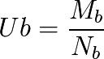
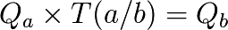
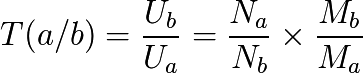
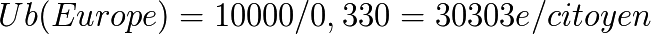

How to compare two economic zones ?
The definitions we have just seen concerning the money supply, its growth, the link it should have with the Universal Dividend and the value field, allow us to compare two economic zones that use two different currencies.
For two economic zones A and B credited each one of a money supply defined in space and time, Ma(x,t) and Mb(x,t) and a number of respective citizen Na and Nb having access to the common money.
The application of the principle of relativity invites us to define the instant common measure of individual value Ua and UB at a given time on the basis of the average monetary density of each of these zones.
For A :

and for B :

The instant exchange rate T(a/b) of the currencies, which represents the ratio of exchange of a quantity of money in the area A Qa to a quantity of money Qb of the area B so that :

Within the principle of relativity a fundamental value, which is :

This fundamental result differs from common tools with which we measure the relationships between the « prices »... Yet the values being fundamentally judged as different from one individual to another, and so from one economic area to another, this reference is completely distorted by the arbitrary choice of values used to defined these prices. Whereas the density of common money does not suffer any kind of arbitrary, and is perfectly measurable.
Numerical application :


Relative exchange rate T (€ / $) = 1,60 $/€
Between 2008 and 2010 the exchange rate found on the markets oscillated between 1,30 $/€ and 1,60 $/€.
But even if the result found is near a fundamental theoretical value applicable in Relative Theory of Money, there are two factors which reference must be made. First of all the money stocks released by the Central Banks are questionable because the American Fed does not communicate officially M3, and these are unofficial websites which give estimations.
Furthermore, and this is not the most important point, we are not in these economic zones within Universal Dividend zones, where individuals are equals before the monetary creation. Money is created in a centralized way on arbitrary values, and in a non symmetrical way from both sides, which creates strong temporary distortions (and an economic loss in the long term according to the importance of these distortions).
Moreover, we can see the role the population is having about the exchange rates measured by the ratio « Na/Nb ». Thus, one can approach the currency policy based on the importance of the economic space considered better. It is obvious that seen this way an economic area under-monetized, will have soon or later to extend the expansion of its money supply to all its space, therefore to have strong growth rate due to spatial catch-up.
We understand here the chinese problem in 2010. Since a small part of the 1 400 millions inhabitants can benefit of monetized exchanges, the money supply must grow strongly in all other area of the economy to monetize it as a whole. It is for hundred of human beings to have access to the monetary tool to develop their exchanges, which will play on the value of N which represents the number of monetized citizen.
However because of the ratio Na/Nb which will be, at the end of complete monetization of its population, really big for it against Europe or United-States, the Chinese money supply « Ma » will be able to grow at the same pace as Na (number of monetized citizens), without it having an impact of the fundamental exchange value of its money.
The evolution of the exchange rate for Europe and the United-states, which are for their part already strongly monetized in space (Nb will not grow much anymore), will not depend then on China monetary growth if this one is only spatial, but on their own monetary growth policy in time, to play with the ratio Mb/Ma.
We are here in front of two growth policy to catch-up with the necessary balance, in two complementary dimensions : spatial on the Chinese side (one should not forgot the similar problem for the 1 200 millions indian people under-monetized too), and temporally for the United-States and Europe. Yet the temporally catch-up in Europe and in the United-States require a Universal Dividend on which to play the density height of the money supply.

Evolution according to a constant ratio Mb/Ma through the temporal monetization. Only the monetary quantity of the exchanges grows and keeps stable the speed of circulation (Luc Fievet RTM 2.0)
{kind=link}